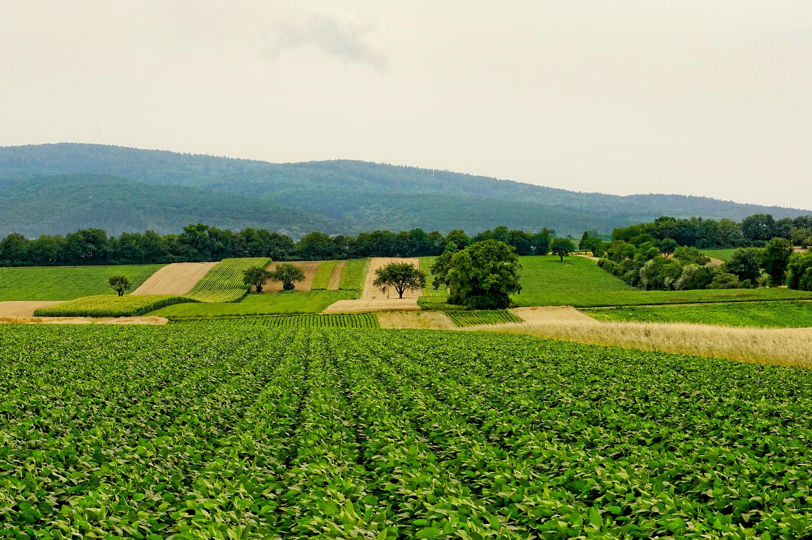

Protegendo a Vida da Natureza e da Agropecuária
Para o crescimento da agricultura, as pessoas realizaram desmatamentos, criação e o uso de agrotóxico e fertilizantes químicos. Muitas vezes isso afeta a natureza e está aumentando as terras degradadas. É preciso que a produção de alimentos seja de larga escala, garantindo a segurança alimentar e a economia, enquanto se preserva os recursos naturais para o futuro
É importante ver o equilíbrio entre a produção agrícola e meio ambiente, porque é necessário pensar sobre a agricultura no futuro e tomar atitudes que resolvam os problemas.
Aumentar a produtividade de agropecuária sem considerar a sustentabilidade de ambiente é mais fácil do que pensar como é possível proteger a natureza para aumentar a produtividade, mas que mantenha o ambiente limpo e sustentável.
O crescimento da agropecuária sem afetar o ambiente e ter a sustentabilidade é importante para proteger a nossa natureza, e também para os seres humanos no futuro.
Isso tem a ver com a Agenda 2030. Existem ODS que garantem que as agriculturas e ambientes sejam protegidas.
Se a ODS2, 6, 12, 13 e 15 for cumprida, consegue-se proteger as plantas, o ambiente e vida dos seres humanos.
Fome zero e Agricultura Sustentável
Visa acabar com a fome, e garante que o acesso universal a uma alimentação seja segura, nutritiva e suficiente o ano todo, além de combater a desnutrição, dobrar a produtividade e a renda de pequenos produtores rurais, promover práticas sustentáveis e resilientes.
Água Potável e Saneamento
Garante a disponibilidade do acesso universal e a gestão sustentável da água e do saneamento básico para todos, incluindo a higiene adequada e a proteção dos ecossistemas aquáticos.
Consumo e Produção Responsáveis
Garante que promove padrões de consumo e produção sustentáveis, ele exige "fazer melhor com menos", buscando desassociar o crescimento econômico de degradação ambiental, reduzir a destruição ecológica e otimizar o uso dos recursos naturais.
Ação Contra Mudança Global do Clima
Garante que a adoção de medidas urgentes para combater as mudanças climáticas e seus impactos. Ele visa fortalecer a resiliência a desastres naturais, integrar o clima nas políticas públicas, melhorar a educação ambiental e mobilizar recurso financeiroa para apoiar as regiões mais vulneráveis.
ODS 15 (Vida Terrestre)
Garante que ecossistemas terrestres sejam protegidos e utilizados de forma consciente, e a recuperação da região desertificada, restaurar solos degradados e interromper a perda de biodiversidade.
Como essas ODS ajudam para crescimento de produtividade da agropecuária, considerando que o meio ambiente não seja afetado ?
A ODS - Objetivos de Desenvolvimento Sustentável - garante a sobrevivência do planeta e visa melhorar a qualidade de vida de todas as pessoas. Ou seja, aumentar a produtividade da agropecuária e a proteção do meio ambiente para proteger o futuro da população.